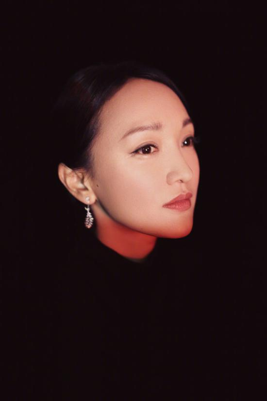

网易娱乐10月25日报道 近日，在与陈可辛的一次对谈中，周迅表示曾为“开始变老”一事焦虑，自曝那段时间“早上起来坐在沙发上就开始哭”。关于生孩子一事，周迅表示自己很爱孩子，但现在还没准备好，也会担心“生出一个对这个世界没什么好处的孩子”。

在此次对谈中，陈可辛谈及《如懿传》中网友对于周迅的脸的争议，周迅坦言，从《明月几时有》到《如懿传》中间的两年，自己是真的不开心，每天愁眉苦脸挂念着变老这件事，拍出来的镜头又被人说胖和皱纹。她还爆料：“那段时间，我真的早上起来坐在沙发上就开始哭，阳光再好也会哭，可能我一时无法去直面人会衰老这件事情。”
做人嘛！开心最重要了！对不对？所以不要想那么多，该玩的时候好好玩，该学习的时候好好学习，这样就好了。努力学习，自己想要的东西就自己努力去争取，不要怨天尤人，加油！